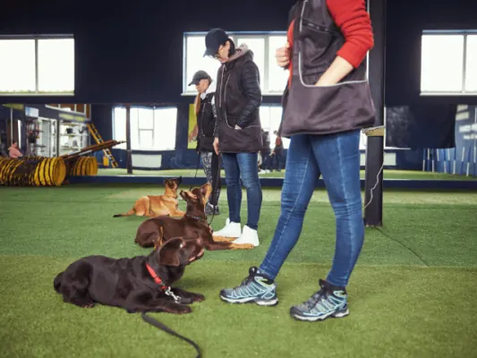

Bedrijvengids
Hondentraining en dierenverzorging in Nijmegen
Een puppycursus, een trimbeurt of iemand die je hond uitlaat als je moet werken: in Nijmegen zijn hondenscholen, trimsalons, dierenpensions en uitlaatservices, vaak met trainingsvelden aan de rand van de stad.
Op deze pagina vind je alle 17 dierenservices in Nijmegen, met openingstijden, een eigen pagina en een kaart. Filter hieronder op wat jij belangrijk vindt, zoals puppycursus, trimsalon of uitlaatservice.
Uitgelicht

VoorbeeldJouw hondenschoolUitgelicht staat bovenaan, met foto en actieknopEerste les gratispuppycursusgroepslessenBekijk hoe het werkt Nog 3 plekken vrijZet jouw dierenservice hier bovenaan, boven 17 andere dierenservices. Met foto's, je actie, een eigen knop en je banner bij onze blogs over honden en huisdieren.Het eerste jaar € 99Waar zoek je naar?
Alle dierenservices in Nijmegen
Op de kaart
Heb je een dierenservice in Nijmegen?
Elke dierenservice staat gratis in onze gids. Wil je opvallen tussen 17 dierenservices? Kies dan voor Uitgelicht of Partner.
| Gratis | Uitgelicht € 149 per jaar, eerste jaar € 99 | Partner € 449 per jaar | |
|---|---|---|---|
| Eigen pagina met adres, kaart en openingstijden | ✓ | ✓ | ✓ |
| Tekst door onze redactie | kort | uitgebreid | uitgebreid |
| Foto's op je eigen pagina | 1 | tot 10 | tot 10 |
| Bovenaan deze pagina, met foto en label Uitgelicht | – | ✓ | ✓ |
| Actie en eigen knop (inschrijven, afspraak, bellen) | – | ✓ | ✓ |
| Uitgelicht onder onze blogs over honden en huisdieren | – | ✓ | ✓ |
| Banner in de partnerbalk | – | bij blogs over honden en huisdieren | op de hele site |
| Artikel over je bedrijf en een plek in de nieuwsbrief | – | – | ✓ |
| Overzicht van weergaven en kliks | jaarlijks | jaarlijks | elk kwartaal |
Kies Uitgelicht Alle mogelijkheden · Staat je dierenservice er al? Klik op je pagina op Dit is mijn bedrijf.
Lees ook
Veelgestelde vragen
Waar kan ik in Nijmegen een puppycursus volgen?
Filter op puppycursus. Lees ook ons artikel over de puppycursus in Nijmegen.
Is er een trimsalon in Nijmegen?
Ja, filter op trimsalon.
Gegevens: onze eigen gids, aangevuld met © OpenStreetMap-bijdragers en Overture Maps.